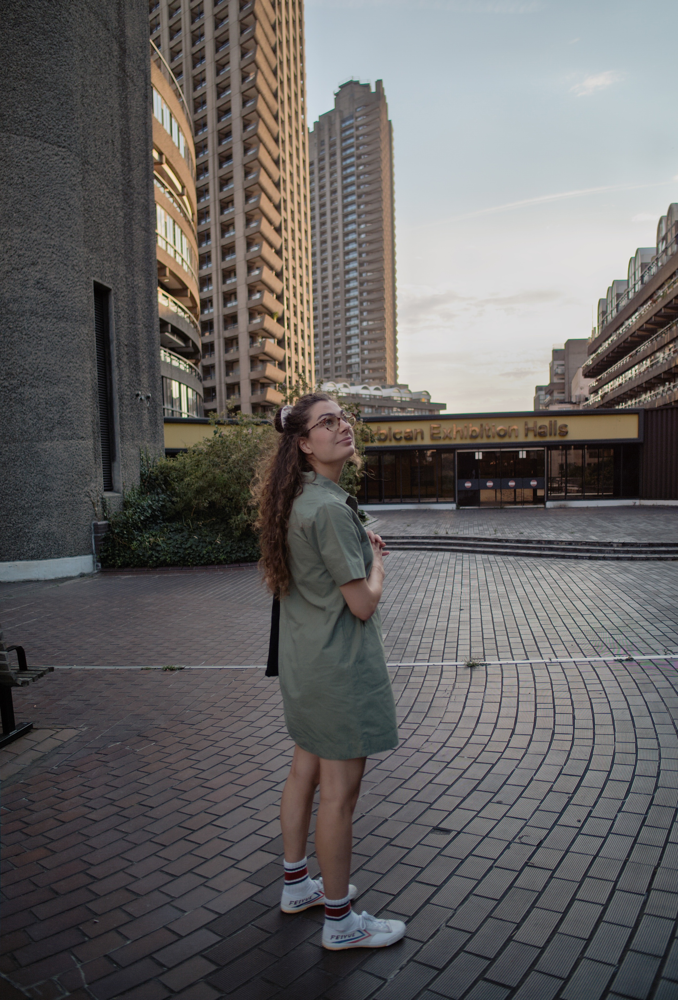
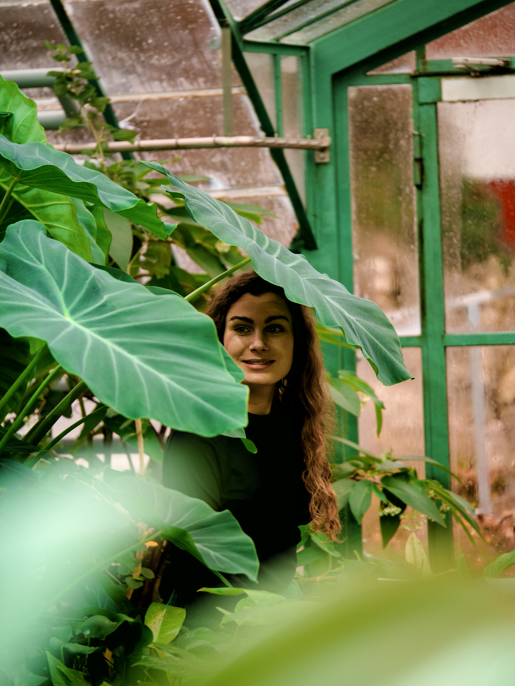

About
My Story
Growing our Future
Growing up in Switzerland, I developed my passion for the natural world and my curiosity for technology. Visiting EPFL’s open doors and the Alimentarium Museum, I was fascinated by the creativity of engineers. Sliding down a mountain, eating milk chocolate and watching boats sailing on the Lac Léman looked innocent. But, I quickly realised that behind the elegant appearance of these clichés lies hours of design, research and innovation. Exploring the diverse landscape of my country, I started to question how humans and nature could live in harmony.


My academic and professional journey strengthened my knowledge of food engineering, city science, and computational ecology. Combining these technical skills, I collaborate with various stakeholders to develop solutions combining a range of hardware and software so that we can better co-create, co-nurture, and co-live with Nature. My interdisciplinary background makes me stand out as it gives me the ability to communicate across fields and translate complex methods and individual practices from opposite disciplines.
Curious about technological progress and sensitive about the health of our environment, I am passionate about researching and testing innovative tools to build a greener, healthier, and sustainable world. I am not afraid to dissect problems, untangled complex vision, and learn new skills. Stepping out of my comfort zone help me find sense to the complexity of our societies and connect with other beings. In the continuous movement of cities, I find energy and creativity, but it is the timeliness of the mountains that equip me with assiduity and humility.
Curious about technological progress and sensitive about the health of our environment, I am passionate about researching and testing innovative tools to build a greener, healthier, and sustainable world. I am not afraid to dissect problems, untangled complex vision, and learn new skills. Stepping out of my comfort zone help me find sense to the complexity of our societies and connect with other beings. In the continuous movement of cities, I find energy and creativity, but it is the timeliness of the mountains that equip me with assiduity and humility.
Media
Media Highlights
Academic Publications
Publications
Ongoing Progress